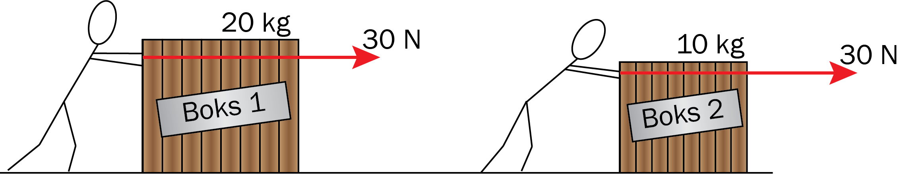
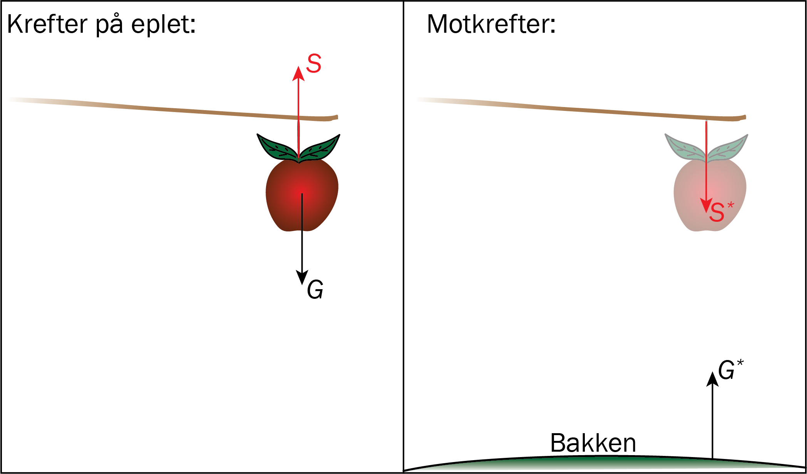
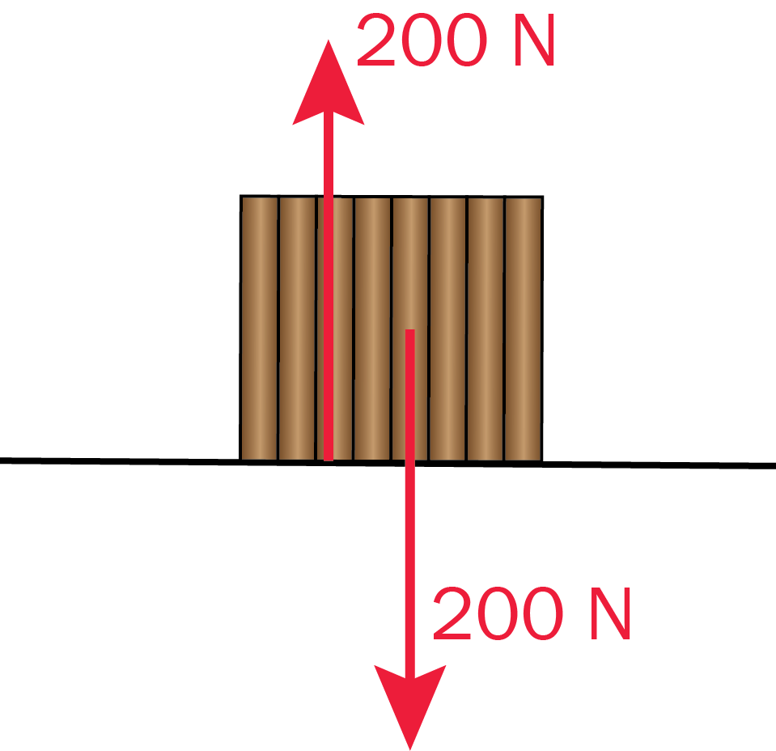
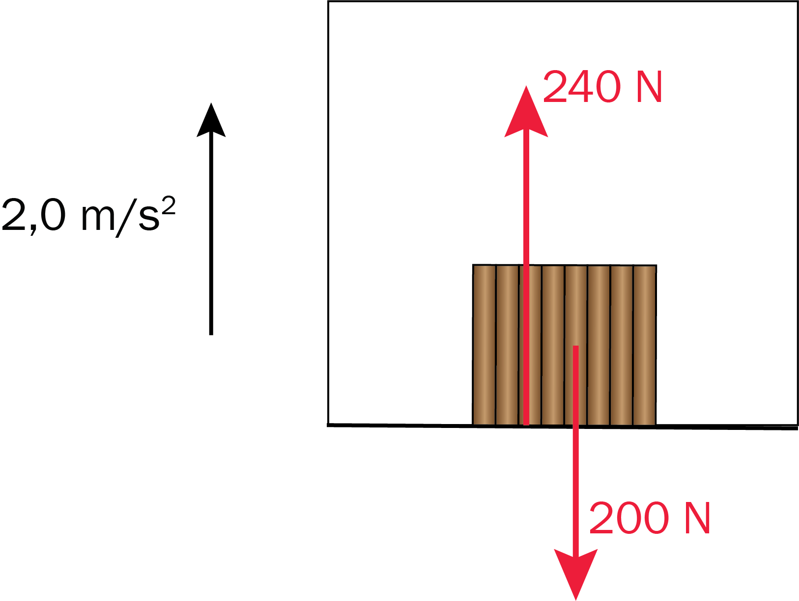
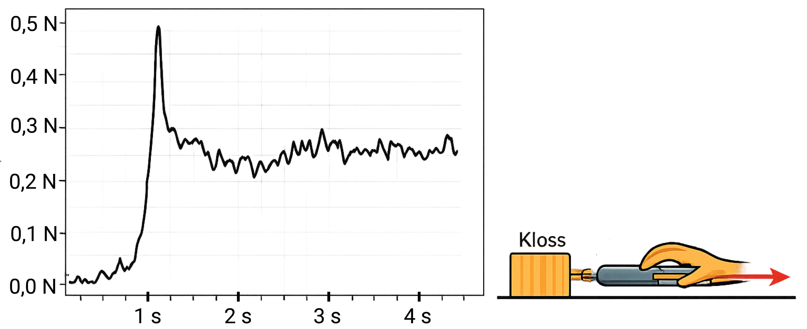
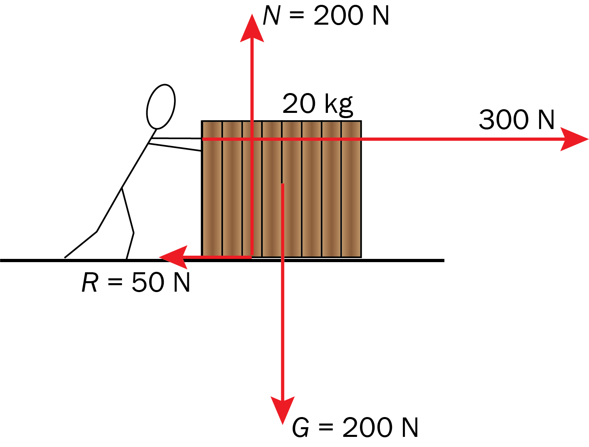
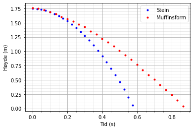
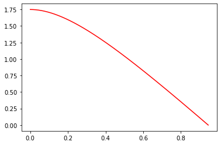

Newtons lover og krefter
Du skal ha kompetanse om
- Newtons 1. lov \(\Sigma F = 0 \Leftrightarrow v = \text{konstant}\)
- Newtons 2. lov \(\Sigma \vec{F} = m\vec{a}\)
- Newtons 3. lov \(\vec{F} = -\vec{F}^{*}\)
- tyngdekraften \(G = mg\)
- friksjonskraft \(R = \mu N\)
- programmering for å gjøre numeriske beregninger med krefter og rettlinjet bevegelse
Newtons 1. og 2. lov
Newtons 1. lov: \(\Sigma F = 0 \Leftrightarrow v = \text{konstant}\)
Et legeme er i ro eller i konstant fart dersom summen av kreftene \(\Sigma F\) som virker på det er null.
Newtons 2. lov: \(\Sigma \vec{F} = m\vec{a}\)
Summen av kreftene \(\Sigma F\) som virker på et objekt er proporsjonal med akselerasjonen til objektet. Proporsjonalitetskonstanten er massen til objektet.
Eksempel

Hvor stor akselerasjon har hver av boksene?
Eksempel
Bestem akselerasjonen til boksene over hvis det virker en friksjonskraft 10 N fra gulvet på hver av boksene.
Summen av kreftene på hver kasse er nå \(\Sigma F = 30 - 10 = 20\text{ N}\).
\[ a_1 = \frac{\Sigma F}{m_1} = \frac{20}{20} = 1\text{,}0 \text{ m/s}^2 \;\;\; \text{ og } \;\;\; a_2 = \frac{\Sigma F}{m_2} = \frac{20}{10} = 2\text{,}0 \text{ m/s}^2 \]Newtons 3. lov og tyngdekraft
Newtons 3. lov: \(\vec{F} = -\vec{F}^{*}\)
En kraft virker alltid mellom to legemer A og B. Når det virker en kraft \(F\) fra A på B,
virker det alltid en like stor, men motsatt rettet kraft \(-F^{*}\) fra B på A.
Tyngdekraft: \(G = mg\)
Tyngdekraften trekker alle ting mot sentrum av jorda. I fritt fall, uten luftmotstand, er tyngdekraften så stor at akselersjonen er lik tyngdeakselerasjonen \(g = 9\text{,}81 \text{ m/s}^2 \).
Eksempel
Et eple henger i ro fra en gren.
Beskriv kreftene og motkreftene som virker på et eplet.

Det virker to krefter på eplet:- Tyngdekraften \(G\), som prøver å trekke eplet nedover
- En kraft \(S\) fra grenen som holder det oppe
- Motkraften til \(G\) er en kraft \(G^*\) som prøver å trekke bakken oppover
- Motkraften til \(S\) er en kraft \(S^*\) som prøver å trekke grenen nedover
Eksempel
En boks med masse 20 kg ligger i ro på et horisontalt gulv.
Bestem kreftene som virker på boksen.
Tyngdekraften er
\[ G = mg = 20 \cdot 10 = 200 \text{ N} \]Normalkraften \(N\), kraften normalt \(90^\circ\) opp fra gulvet på boksen, må være like stor som tyngdekraften.

Eksempel
En boks med masse 20 kg ligger i en heis. Heisen akselererer oppover med en akselerasjon på 2,0 m/s\(^2\).
Bestem kreftene som virker på boksen.
Tyngdekraften er \(G = mg = 20 \cdot 10 = 200 \text{ N}\).
Summen av kreftene er \(\Sigma F = ma = 20 \cdot 2,0 = 40 \text{ N}\), så normalkraften må være \(240 \text{ N}\).

Friksjonskraft
Friksjonskraften på et legeme er \[ R = \mu N \] hvor \(\mu\) kalles friksjonstallet, eller glidefriksjonstallet, og er forskjellig mellom ulike legemer.
Når et legeme ligger i ro, har vi et annet friksjonstall enn glidefriksjonstallet. Dette friksjonstallet er større enn glidefriksjonstallet.
Eksempel
Vi trekker en kloss med masse 125 g bortover et horisontalt gulv. Klossen ligger først i ro, før vi øker kraften gradvis helt til klossen begynner å bevege seg med en konstant fart.
Ved hjelp av en kraftmåler lager vi en graf som viser kraften vi trekker med som funksjon av tid:

Bestem friksjonstallet mellom klossen og underlaget.
Eksempel
En kasse med masse 20 kg blir dyttet med en kraft 300 N. Friksjonstallet mellom kassa og underlaget er \(\mu = 0\text{,}25\).
Bestem akselerasjonen til kassa.
Tyngdekraften er
\[ G = mg = 20 \cdot 10 = 200 \text{ N} \]Normalkraften er like stor som tyngdekraften, siden kassa ikke beveger seg i vertikal retning.
Friksjonskraften er
\[ R = \mu N = 0\text{,}25 \cdot 200 = 50 \text{ N} \] Vi kan tegne en figur som viser kreftene:
Her ser vi at summen av kreftene gir følgende akselerasjon: \[ a = \frac{\Sigma F}{m} = \frac{300 - 50}{20} = \frac{250}{20} = 12\text{,}5 \text{ m/s}^2 \]Numeriske beregninger og luftmotstand
Luftmotstanden \(L\), kraften lufta bremser et legeme med, er med god tilnærming gitt ved
\[ L = k \cdot v^2 \text{ (når \(v\) > }3\text{ m/s)} \;\;\;\;\;,\;\;\;\; L = k \cdot v \text{ (når \(v\) < }3\text{ m/s)} \]hvor \(k\) er en konstant som avhenger av formen og størrelsen til legemet.
Siden luftmotstanden gjør at akselerasjonen ikke er konstant, må vi ofte programmere når vi regner med luftmotstand. Nedenfor er standardkoden vi bruker til dette.
s, v, t = ..., ..., ... # Legg inn startverdier for strekning, fart og tid
dt = 0.001
while ...: # Legg inn betingelse for hvor lenge koden skal kjøres
a = ... # Legg inn uttrykket for akselerasjon
v = v + a*dt
s = s + v*dt
t = t + dt
print(t, s, v, a)Eksempel
En stein og en muffinsform blir sluppet samtidig 1,75 m over gulvet. Ved hjelp av Tracker måler vi høyden som funksjon av tid etter at de er sluppet. Grafen viser resultatet av målingene:

Massen til muffinsformen er 100 g.
Lag et uttrykk for luftmotstanden på muffinsformen.
For å bestemme \(k\) bruker vi at muffinsformel etter ca. 0,60 s har fått en tilnærmet konstant fart, en såkalt terminalfart \(v_\text{T}\), som er gitt ved \[ v_\text{T} = \frac{s}{t} = \frac{0\text{,}25 - 0\text{,}75}{0\text{,}80 - 0\text{,}60} = -2\text{,}5 \text{ m/s}\] Dette betyr at luftmotstanden er like stor som gravitasjonskraften når farten er 2,5 m/s, noe som gir \[ kv_\text{T} = mg \;\;\; \rightarrow \;\;\; k = \frac{mg}{v_\text{T}} = \frac{0\text{,}100 \cdot 9\text{,}81}{2\text{,}5} = 0\text{,}39 \] Dermed er en modell for luftmotstanden \[ L = 0\text{,}39 \cdot v \]
h, v, t = 1.75, 0, 0 # Startverdier for strekning, fart og tid
dt = 0.001
while h > 0: # Så lenge muffinsformen er i lufta
a = -9.81 - 0.39*v/0.100 # Akselerasjonen, fra Newtons 2. lov
v = v + a*dt
h = h + v*dt
t = t + dt
print(t, h, v, a)Vi kan også lage et program som lager en graf:
from pylab import *
h, v, t = [1.75], [0], [0] # Lister [...] for strekning, fart og tid
dt = 0.001
while h[-1] > 0: # Så lenge den siste høydeverdien er over null:
a = -9.81 - 0.39*v[-1]/0.100 # Akselerasjonen, fra Newtons 2. lov
v.append(v[-1] + a*dt) # Legger til ("append") en verdi i lista med fart
h.append(h[-1] + v[-1]*dt) # Legger til ("append") en verdi i lista med høyde
t.append(t[-1] + dt) # Legger til ("append") en verdi i lista med tid
plot(t, h) # Plotter tid på x-aksen og høyden på y-aksen
I programmet lager vi lister, f.eks. h = [1.75].
Listene blir utvidet med nye verdier med h.append(...)
h[-1] henter ut den siste verdien som ble lagt inn i lista.
plot(t, h) lager en graf med alle verdiene fra t- og h-lista.